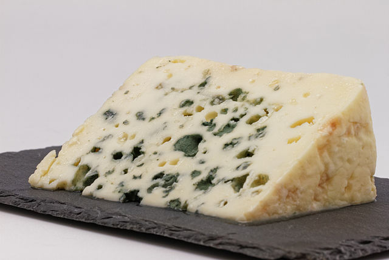

Fungii se reproduc prin urmatoarele doua moduri:
- Asexuat;
- Sexuat.
Reproducere asexuata
In cazul ciupercilor, reproducerea asexuata (vegetativa) este foarte frecventa.
Inmultirea nu are loc prin formarea de celule sexuale, ci prin formarea de agamete (spori care formeaza un nou organism fara fuziune cu o alta celula) care la unele specii lipsesc chiar și ele.
Acesti bureti sunt numiti fungi imperfecti.
Exista diferite tipuri de spori, de exemplu:
- Artrosporii (oidii): sunt cauzati de spargerea hifelor în celule individuale.
- Ascosporii: sunt recipiente sub forma de sac alungit, in care are loc meioza ciupercilor si in care se formeaza ascosporii haploizi, care la randul lor reprezinta o forma de raspandire la unele tipuri de ciuperci. Sporulatia este adesea necesara pentru a genera rapid urmasi, de exemplu pentru a depasi perioade de foame.
- Blastosporii: se formează ca protuberante la varfurile hifelor sau in alte pozitii si se maturizeaza de la baza. Se separa fara formarea de septe. Daca blastosporii se formează pe axe minore, ele se numesc simpodiospori.
- Clamidosporii: imobili, cu pereti grosolani, se dezvolta intercalare (restrictionate la anumite zone) sau prin umflarea capetelor de hifa, atât în interiorul hifelor, cât și prin asa-numita germinatie. Ciuperci terestre si acvatice le pot dezvolta sub conditii nefavorabile de trai.
- Conidiosporii: prin constrictie la varful anumitor hife fungide, se formeaza asa-numitele conidiofore, din care se eliberează ulterior conidiosporii. Sunt exospori.
- Porosporii: cu pereti grosi sunt formati individual sau in verticile prin pori in peretele celular al hifei purtatoare de spori si pot fi de asemenea formate ca lanturi care cresc de la bază pana la varf.
- Sporangiosporii: se formeaza endogen in hife deosebite, asa zisilor sporangi (la Phycomycota), recipiente de fructe asemanatoare unui saculet, in interiorul carora se dezvolta sporangiosporii.
- Zoosporii: se gasesc numai la ciupercile acvatice, fiind spori flagelati care se dezvolta endogen în zoosporangii.